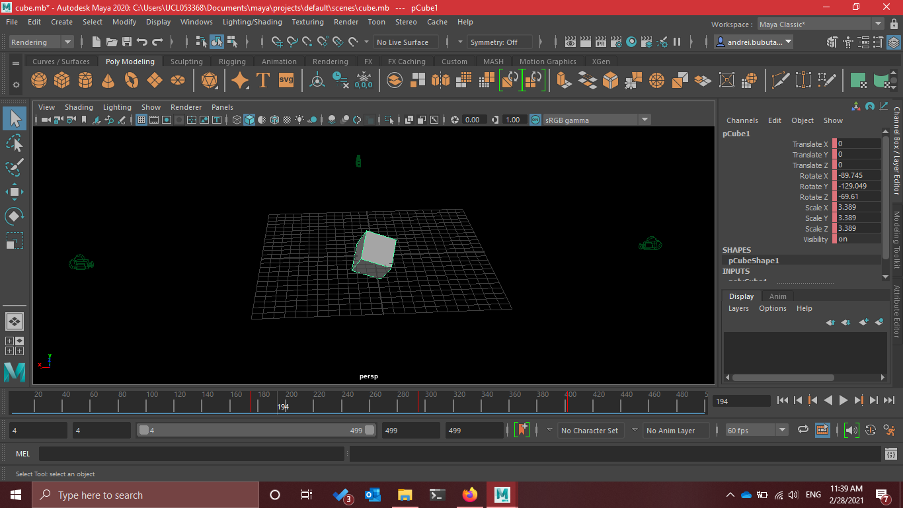
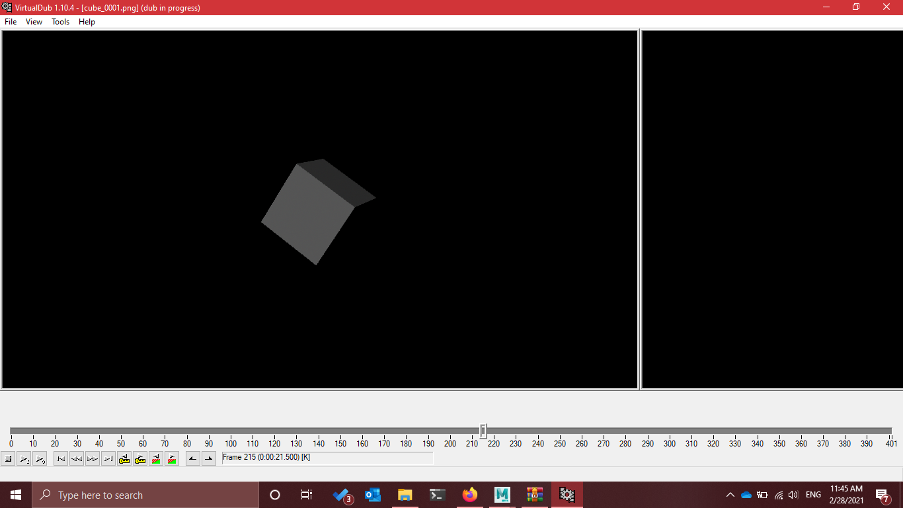

Testing
Since we did not have the needed cameras, we used a virtual 3D object to test the code functionality. We learned how to use Maya to create a 3D cube that rotates at different angles in order to infer the 3D effect. Then we created 4 cameras at the same level as the cube that filmed it from 4 different perspectives (front, back, left and right). After yielding the frames into 400 .png files per video (the rotation movement we used had 400 frames), we used VirtualDub to transform the image sequence into a video (a .avi file). Finally, with the 4 videos ready, we inputted them into the program and simulated the situation of filming an object from 4 different angles.
 The result is shown by the video:
In addition, we also tested our media editor using a pre-recorded video stream of a person’s head, provided by our clients. The output video stream is shown as following:
We tried to project it onto a local phone device, and the result was also positive. The object can be seen in 3D clearly especially in a dark room.
User acceptance testing
We did user acceptance tests when we finished the implementation process. We divided our testers into two groups. First, we presented our final product to the testers and asked for feedback afterwards. Second, we asked our testers to play around with our python script, only providing the user manual as a guide.
The feedback we gained was positive. In the first case, the users could understand how the program worked and were willing to develop more features based on the current results. Our media editor was considered to be successful to implement all the key requirements and had a good performance. They were satisfied with the different types of inputs and outputs the program could offer especially. Regarding the performance of the final product, they spotted a problem that we didn’t take into account initially. When the output video redirects to the video-conferencing app as a webcam, in this case Zoom, the video was stretched to fit the 16:9 aspect ratio. This new-found bug may lead to an issue while projecting the rendered video onto a pyramid. Our group will look into this as the top priority in the future.
Additionally, they also suggested that if we could allow some offset from each perspective, it would provide more flexibility to the input video stream, which would in turn improve the user experience.
In the second test, the testers could follow the given instruction and achieve the desired features they wanted without difficulty. They noted that the README file and the comment in pyramid_render.py were very helpful, logical and easy to follow. Also, the overall performance was smooth and stable. At the same time, our non-technical testers who are not familiar with programming found it more challenging to follow. They suggested that if we could make a user interface, such as a small mobile app, the system would be much more user-friendly.